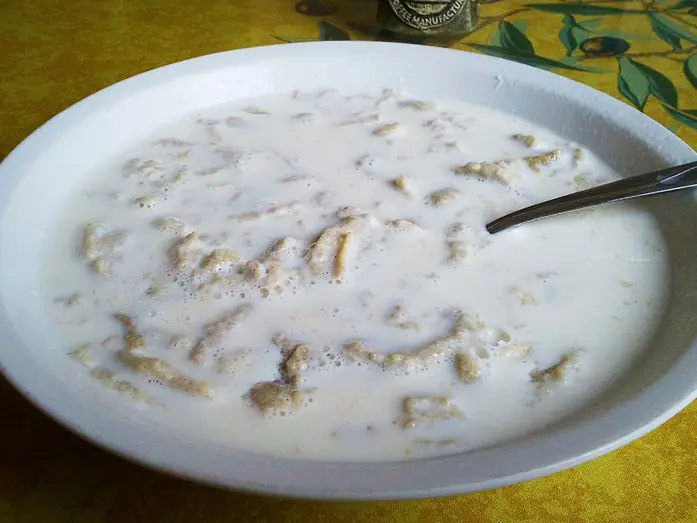

Фото: Petar Milošević, CC BY-SA 3.0

Гречневая каша с молоком
Рассыпчатая гречка, залитая горячим молоком, как в детстве
25 мин3 порц.272 ккал на порциюБ 11 · Ж 10 · У 38Русская кухня
Продукты на 3 порц.
- Гречка0,75 стак.
- Вода300 мл
- Молоко450 мл
- Сливочное масло15 г
- Соль1 щеп.
- Сахар по желаниюпо вкусу
Как готовить
- Переберите и промойте гречку в холодной воде 2-3 раза.
- Залейте гречку водой, посолите и доведите до кипения на сильном огне.
- Убавьте огонь до слабого, накройте крышкой и варите 15 минут, пока вода не впитается.
- Добавьте масло, перемешайте и оставьте под крышкой на 5 минут.
- Подогрейте молоко до горячего, но не кипятите.
- Разложите гречку по тарелкам, залейте молоком и по желанию добавьте сахар.
Совет. Не открывайте крышку и не мешайте гречку во время варки, тогда она получится рассыпчатой. Пропорция крупы и воды 1 к 2.